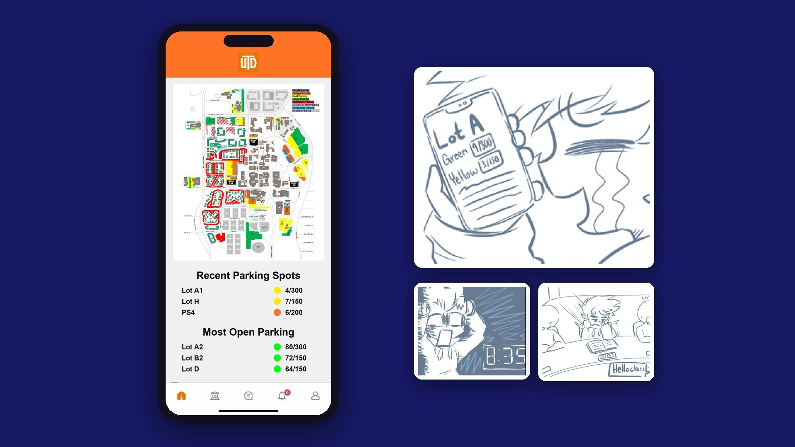
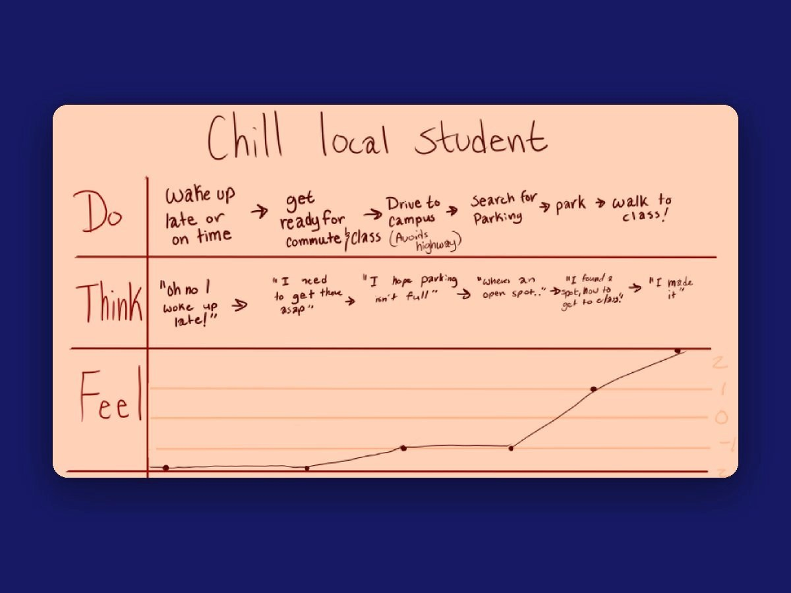
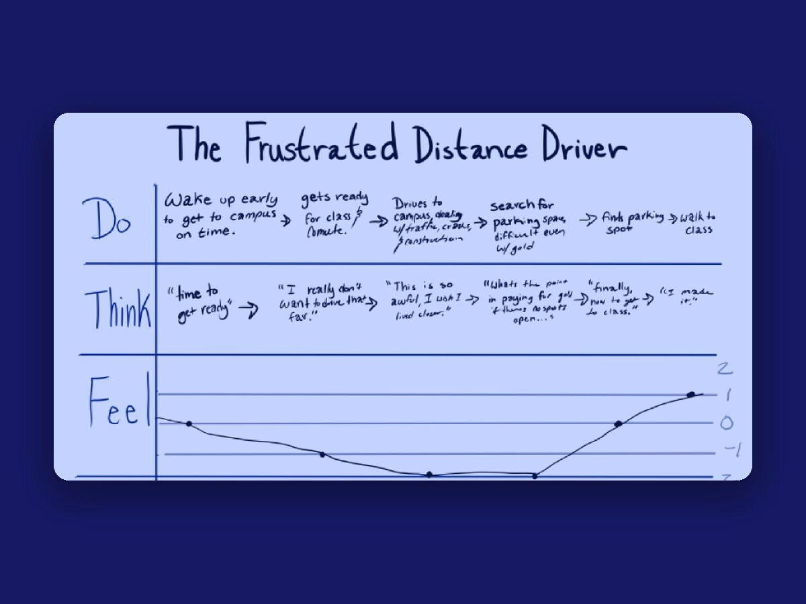
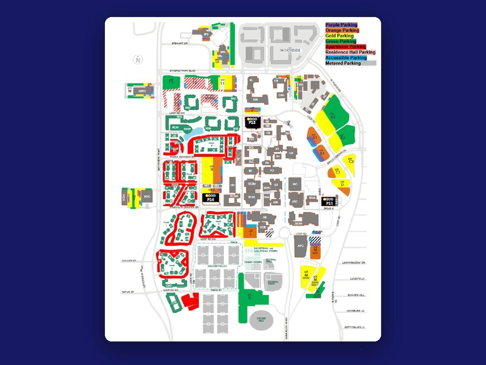
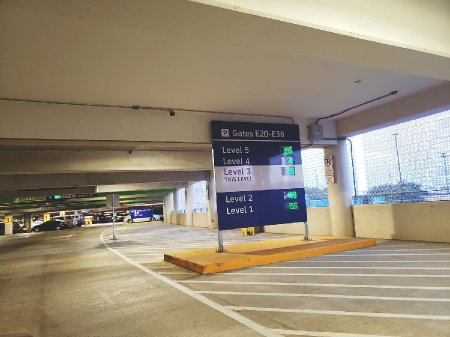
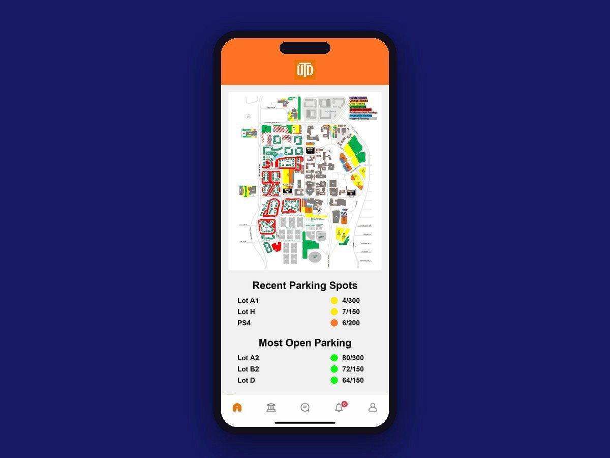
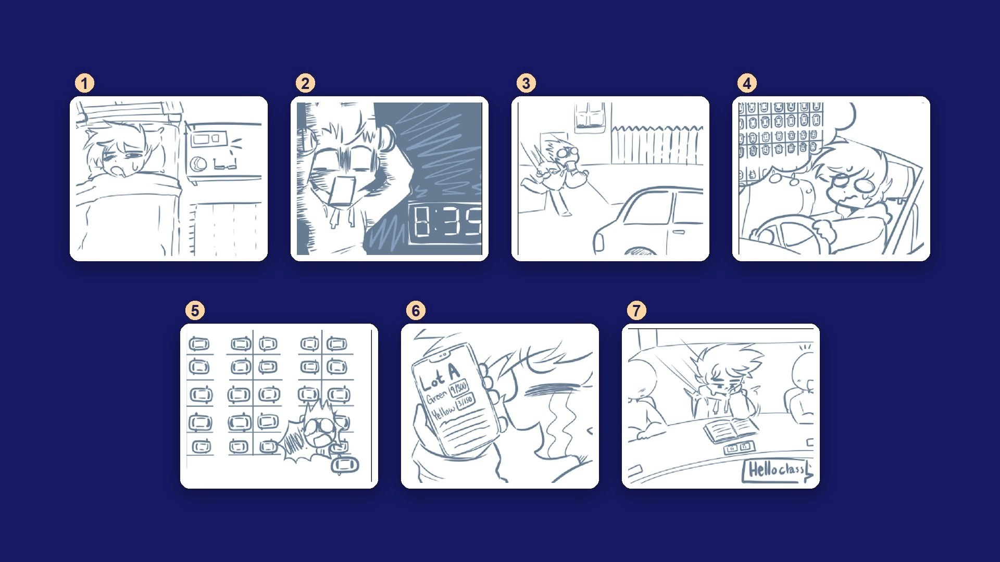

TEAM PROJECT • UX RESEARCH & INTERACTION DESIGN • MAY 2025
Comet Commute
Parking at UT Dallas can quietly ruin a student's morning. Comet Commute is a concept that shows you where the open spots are, right inside the campus app you already have.

- Role
- UX Researcher & Interaction Designer
- Team
- Team project
- Timeline
- May 2025
- Methods
- User interviews, personas, journey maps, storyboarding, wireframing
Overview
Problem
Parking at UTD was a real source of stress for the students we talked to, whether they lived close by or drove an hour to get here. Spots were hard to find, there was no good way to plan parking time into a commute, and a lot of students felt their parking pass just wasn't worth what they paid for it.
Goal
Take some of the guesswork out of parking. We wanted students to know where the open spots were, and how long the walk to class would be, before they ever pulled into a full lot. And we wanted to do it inside the UTD app they already had.
Impact
This was a class concept, not a shipped product, so there's no real usage data yet. [TBD: add outcomes if this gets built or tested.]
Research
We started by talking to people. We interviewed students who live on campus and students who commute, and made a point of including both the everyday cases and the extremes on each side. We wanted to understand what it actually feels like to drive a long way to school and then still have to make it to class. We also read up on how other campuses handle parking and walking between classes, so we knew what had already been tried.
The Chill Local Student
22, a senior with a 15-minute drive that skips the highway. They usually park in PS4 near ATEC, and they stopped buying a parking pass because it didn't feel worth the money. They're pretty relaxed about being on time (and often aren't), but the parking crunch at the start of every semester still gets to them, and the lots feel more disorganized every year.
The Frustrated Distance Commuter
21, a junior with an hour-long highway drive and frequent crashes along the way. They pay for a gold pass and still end up circling for a spot. The cost, the layout, and the constant changes wear on them, and once class is over they just want to go home. The commute has left them too burned out to get involved on campus.
What kept coming up
- Finding a spot that's open and close by, on a campus that keeps growing and changing
- Not knowing how long parking will take, so it's hard to plan to get to class on time
- Paying for a pass that doesn't feel worth the convenience it gives you
[TBD: add a real quote from a student interview once we have one on record.]
Research participant


Putting the two journeys side by side showed us where it hurts most. For both students, the worst part of the day isn't the drive. It's circling for a spot. Their mood doesn't pick back up until they've finally parked.
Process

What we kept in mind
- Parking spots come first. Anything else we happen to fix along the way is a bonus.
- Keep the scope realistic, so it's something that could actually be built.
- This is a wicked problem. We can't solve it, but we can make it hurt less.

Ideas we tried on
- Pressure plates: sensors in each spot to track which spaces are taken
- Our own app: something new to connect the campus community and tackle parking directly
- Honor-system check-in: students claim the spot they park in. It only works if everyone does it, and one person skipping it breaks it for everyone else.
In the end, we decided to use the detection that UTD's parking garages already have, make it more reliable, and connect it to an app. Then we realized we didn't need to build a new app at all. UTD already has one, so we'd add the new features there. We'd also show it off during orientation, because plenty of students know the app exists but don't use it or don't think it's useful.
Instead of asking students to download something new, we built into the app they already have, and introduced it at orientation.
Design Iterations

Wireframe
This screen is built to answer the one thing you're wondering as you pull onto campus: where can I park right now? Your usual lots are up top, and the emptiest lots sit right below them for the mornings you're running late. Each lot shows open spots out of the total, with a colored dot so you can tell how full it is at a glance.
Next, we'd add favorite parking areas and a quick way to find the lots closest to your class, using your schedule.
Storyboard

- Alfred wakes up, ready to head to campus.
- Then he sees the clock. He's an hour late.
- He rushes out the door.
- The whole drive, he's worrying about parking.
- When he gets there, the lots are packed.
- But he has the app, so he checks which lots still have room.
- He finds a spot and makes it to class on time.
Final Solution
Our concept adds three things to the UTD app:
Real-time availability
Improve the sensors that already detect when a car is in a spot, and show what they see in the UTD app.
Schedule-aware suggestions
The app already knows your classes, so it can suggest lots based on distance and open spots, and tell you how long the walk will be.
Predictive planning
Over time, the parking data can show when lots get busy, how many spots to expect, and when it's best to arrive.
Parking passes probably aren't going away, since they bring in a lot of money for the university. But when students can see where the open spots are instead of wandering past full rows, the pass starts to feel worth it. Parking gets faster, less of a hassle, and a lot less frustrating.
Results
This was a class concept, not a shipped product, so there's no real usage data to report yet. These are the things we'd want to measure if it were built and tested.
Reflection
Getting people to actually use something is its own design problem. Building on the app students already have, instead of asking them to download something new, is what made this idea feel doable.
Campus parking is a wicked problem, and we knew going in that we couldn't fix it. We can't make the walk from a far-away lot any shorter. But we can help students know what to expect, so the morning feels a little less like a gamble.